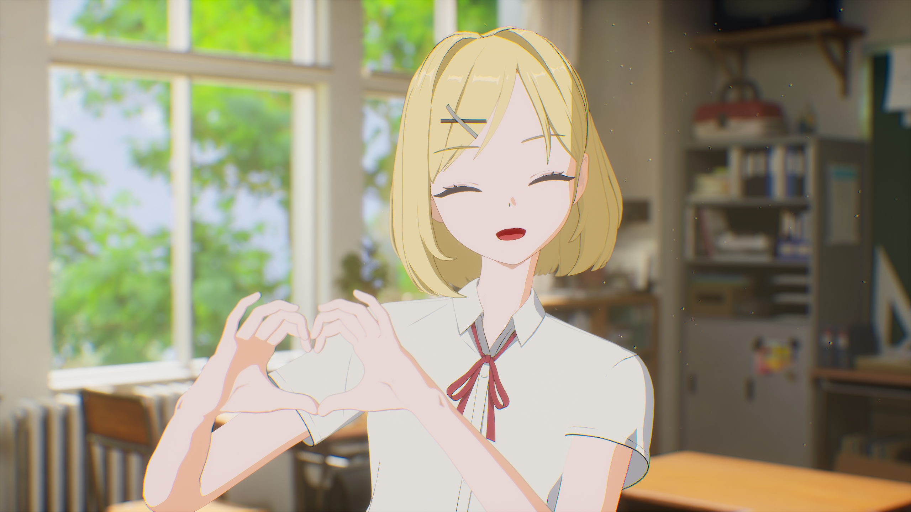
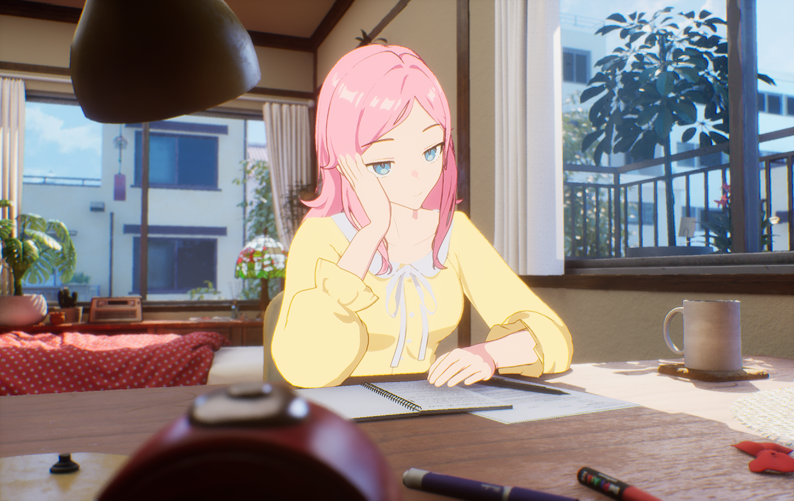
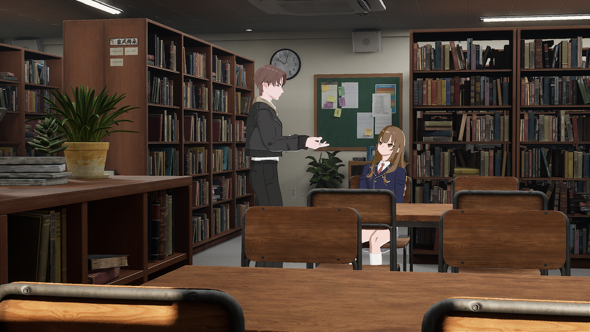
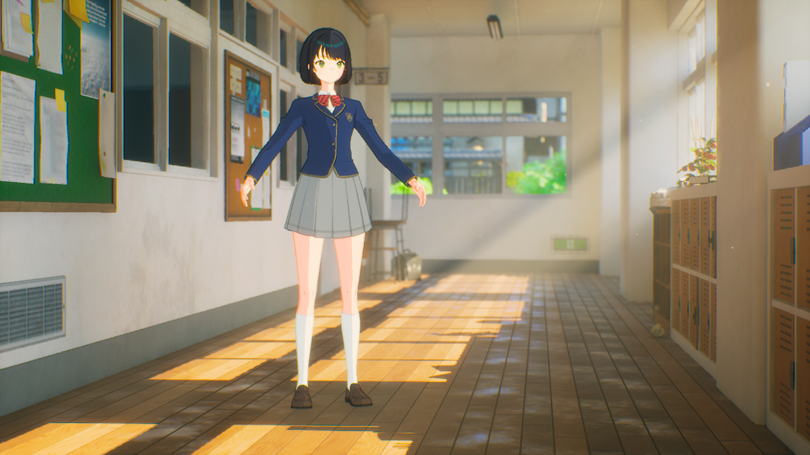
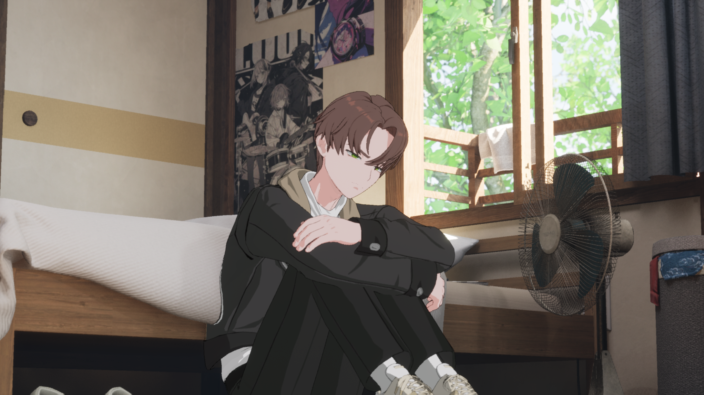

Character System
Connecting character authoring with runtime loading
Production · UE5 · C++ · Blueprint · cinev.com
Problem
The product needed to manage realistic, anime, and mixed-style characters through parts assembly, registration, preview, and loading. A single Blueprint mixed save/load logic and asset references, causing the runtime to pull in authoring data. External characters also required consistent camera targets and thumbnail framing across different models.
Solution
I separated authoring tools from runtime loading. The editor uses a C++ plugin and registration Blueprint to create Data Assets and thumbnails and preview the look. The runtime loads the required meshes, materials, and parameters from those assets. The guiding requirement was letting artists add and change presets without editing code.

NRC Data Asset — managing parts, materials, outline, and Chaos Cloth settings in one place

Editor preview — checking NPR characters on background without launching the game
What I proposed and built
I proposed a save/load prototype for external characters using VRM4U, then developed the adopted concept into character registration and management features. My work connected the existing loader to the product’s Data Asset and preset workflows and extended facial reference-point detection for camera targeting and thumbnails.
Changes and results
| Area | Before | After |
|---|---|---|
| Save / Load | Authoring and runtime data combined in one Blueprint | Editor registration separated from Data Asset-based runtime loading |
| Preset authoring | Configuration managed in a complex character actor | Registration, edits, and look previews without code changes |
| External characters | Per-model camera reference setup | Facial reference points used for cameras and thumbnails |
Look Dev Snapshots
Mid-production snapshots shared by environment artists — placing character presets via editor preview to match tone, mood, and scale.
Station — outdoor lighting tone check

Close-up — expression & skin tone check

Indoor — character preset scale under natural light

Library — multi-character preset placement & shadow check

Hallway — mood check under strong backlight

Room — character preset visibility in dark tone
System Structure
Three separate codebases, connected through Data Assets and VRM info nodes. The editor tool produces Data Assets. The runtime Blueprint loads them async. VRM Reference Points handles external model info.
[1] NPR Character Manager (C++ Plugin)
└─ BP_Character_EnvCheck ─── Editor (for artists)
├─ Parts assembly (Head/Hair/Body)
├─ Preset save → Data Asset production
└─ Editor Tick → Preview without PIE
Data Asset ─────┐
▼
[2] BP_Basemodel_TF ─────────── Runtime (inherits CinevCharacter)
├─ Internal: Data Asset → Per-part async load
└─ External: VRM loader → Whole-model load
▲
│ VRM info node update
│
[3] VRM Reference Points ──── VRM4U Plugin (C++)
├─ 4-level fallback face detection (crown/eyes/mouth/nose)
└─ Camera target + automatic thumbnail capture
CinevNPRCharacterManager — C++ plugin headers
Editor — Character Environment Checker
Artists assemble head, hair, and body parts in the editor and save them as presets. The Editor Tick Interface allows verifying characters and animations on a background without launching the game. The runtime reads these Data Assets directly.

C++ character actor header — DataTable reference declarations


Editor Tick — preview without PIE
Runtime — Character Blueprint
A separate codebase from the editor tool -- a runtime character Blueprint inheriting the base character class. Internal characters load parts asynchronously from editor-produced Data Assets (Head/Hair/Body split), while external VRM loads the entire model through a loader. The same Blueprint handles both, branching only at the load path.


Unified / split skeletal mesh load branching
External Model Support — VRM Reference Points
A C++ module written for the VRM4U plugin that updates VRM info nodes in the runtime character Blueprint. It auto-detects the face position of any external VRM/PMX via a 4-level fallback, then uses the result as a camera target to automatically capture 3-angle thumbnails (face close-up, upper body, full body). A commandlet environment enables batch thumbnail generation for all characters without opening the editor. A-pose/T-pose detection is also automatic.

C++ header — Mouth/Nose 4-level fallback detection
Auto face detection running on an external VRM

3-angle auto-captured thumbnails

C++ — auto camera distance calculation for 3-angle thumbnails

C++ — commandlet render frame capture (Lumen GI, SSS warmup)

In-house + external VRM character lineup